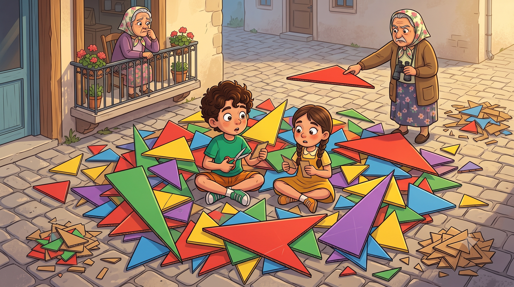
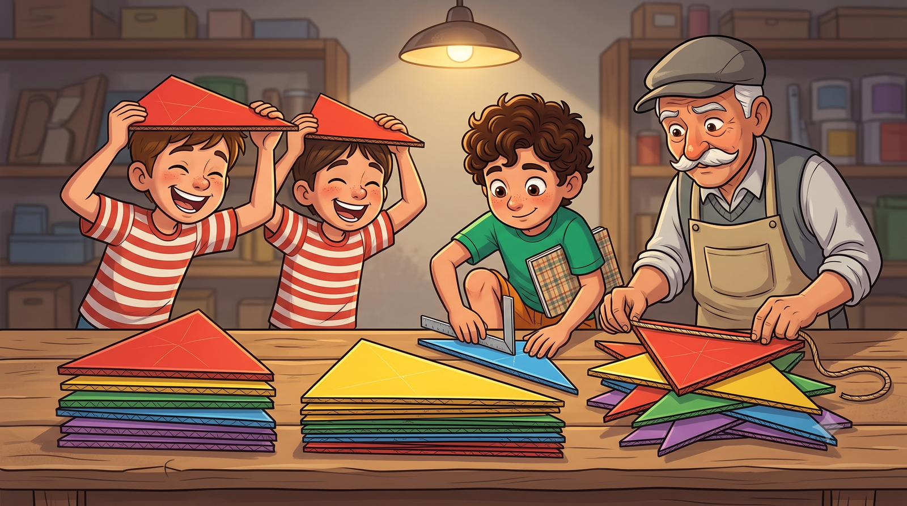
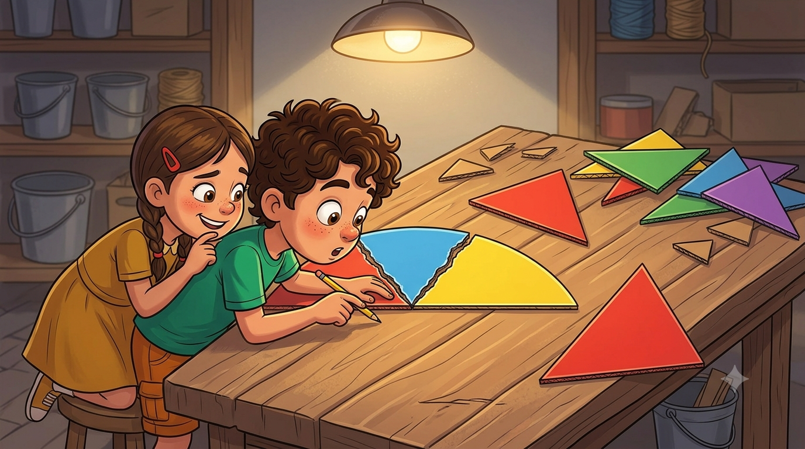

Final günü geldi! Saha hazır, börek hazır, harita hazır, meydan altıgen... Bir tek süsleme kaldı: yüzlerce üçgen flama. Ama flamalar birbirinin eşi olmazsa Mübeccel Teyze'nin gözünden kaçmaz. Pergelin sırrını çözüp finali kurtarmaya hazır mısın?
Ve final günü geldi çattı. Muhtar sabahın köründe anons yaptı; bu sefer boğazını beş kere temizledi, ki bu, mahalle tarihindeki en büyük haber demekti: "Sayın mahalleli! Bugün final günüdür! Saat beşte herkes sahaya! Kaybeden taraf üzülmeyecektir! Üzülenler de belli etmeyecektir!"
Bana da beşinci unvanım verildi: "Süsleme Genel Sorumlusu." Görev: sahanın etrafına, ipe dizilmiş üçgen flamalar asmak. Elif'le renkli kartonları kaptık, makasları aldık, kesmeye başladık. Yarım saat sonra önümüzde bir flama yığını vardı ama... nasıl desem... her biri başka bir hayvana benziyordu. Biri sivri mi sivri, biri yamyassı, birinin köşesi sanki küsmüş de duvara dönmüştü.
Mübeccel Teyze balkondan tek tek inceledi: "Şu köşeli olan iyiymiş. Şu yassı olan neyin nesi? Onu asarsanız ben maça gelmem." Tehdit büyüktü. Mübeccel Teyze gelmezse maçı kim yönetecekti? Hakemler bile ona danışıyordu.

Dedem flama yığınını önüne aldı, tek tek ayırmaya başladı. "Bunlar zannettiğin gibi 'yamuk yumuk' değil evlat," dedi. "Her birinin adı var." İple üç kenarını ölçtü birinin: üçü de eşit. "Bu, eşkenar üçgen. Ailenin en düzgün çocuğu." Bir başkasının iki kenarı eşit çıktı: "Bu, ikizkenar üçgen. İki kenarı ikiz, biri farklı." Üç kenarı da farklı olana geldi sıra: "Bu da çeşitkenar üçgen. Her kenarı kendi yoluna gider."
Emre yassı flamayı kaldırdı: "Peki bu duvara küsmüş olan?" Dedem güldü: "Onu açılarına göre okuyacaksın. İçindeki bir açı 90 dereceden büyükse geniş açılı üçgen olur. Yassılık dediğin, geniş açının ta kendisidir." Gönyeyi çıkardı, sivri bir flamaya dayadı: köşelerden biri tam 90 dereceydi. "Bu da dik açılı üçgen. Merdivenin duvara dayandığı yere bak, çatıya bak, hep bu vardır." Bütün açıları 90'dan küçük olanlara da dar açılı üçgen dendiğini öğrendik.
🔺 Defterime not aldım: Kenarlarına göre: eşkenar (3 eşit), ikizkenar (2 eşit), çeşitkenar (hepsi farklı). Açılarına göre: dar açılı (hepsi < 90°), dik açılı (biri = 90°), geniş açılı (biri > 90°).

Elif bir ara elinde yırtık bir flamayla geldi; üç köşesini koparmış. "Abi bak, numara göstereceğim," dedi. Kopardığı üç köşeyi masanın üstünde yan yana dizdi; üç açı birleşince ortaya dümdüz bir çizgi çıktı. "Gördün mü? Üç iç açı yan yana gelince doğru açı oluyor: tam 180 derece! Hangi üçgeni yırtarsan yırt, hep 180!"
Denedim. Sivri flamayı yırttım: 180. Yassıyı yırttım: 180. Dedemin eşkenarını yırtacaktım, dedem flamayı havada yakaladı: "Kanıtlanmış bilgiyi tekrar yırtmaya gerek yok evlat." Ama ben artık biliyordum: bir üçgenin iç açılarının toplamı her zaman 180 derecedir. Bu yüzden bir üçgende iki tane dik açı olamaz — 90 artı 90 zaten 180 eder, üçüncü köşeye açı kalmaz. İki geniş açı ise hiç olamaz; daha toplarken taşar.
📐 Defterime not aldım: Üçgenin iç açıları toplamı = 180°. Bu yüzden bir üçgende en fazla BİR dik açı ya da BİR geniş açı olabilir!

Güzel de, hâlâ bir sorunumuz vardı: Mübeccel Teyze'nin istediği gibi birbirinin tıpatıp eşi flamaları nasıl kesecektik? Göz kararı yasaktı; o kanun çıkmıştı. İşte o an dedem, alet çantasının en dibinden pergeli çıkardı. "Çemberi hatırlıyor musun?" dedi. "Şimdi pergelle üçgen inşa edeceğiz. Mühendis işi."
Şöyle yaptık: Önce cetvelle bir [AB] doğru parçası çizdik — flamanın alt kenarı. Sonra pergeli açtık, sivri ucunu A'ya koyduk, bir çember çizdik. Aynı açıklıkla bu kez B'ye koyduk, bir çember daha. İki çember birbirini iki noktada kesti. Dedem üstteki kesişim noktasını gösterdi: "İşte C köşen. Merkezleri ve kesişim noktasını birleştir." Birleştirdim: karşımda kusursuz bir üçgen! Pergel açıklığını hiç değiştirmeden aynı işlemi tekrarladık: her flama bir öncekinin tıpatıp eşi. Kartondan bir üçgen ordusu.
Akşam flamalar rüzgârda dalgalanırken final maçı başladı. Biz mi kazandık, komşu mahalle mi, söylemeyeceğim; muhtarın anonsundaki kural gereği üzülenler belli etmeyecekti. Ama şunu söyleyebilirim: maçtan sonra Mübeccel Teyze balkonundan seslendi: "Flamalar çok güzelmiş evladım. Hepsi birbirinin aynısı!" İşte o an, beş unvanlı biri olarak, kariyerimin zirvesindeydim. Muhtar da son bir görev verdi: flama deposunun etiketlenmesi...
⚙️ Defterime not aldım: Pergel-cetvelle üçgen inşası: [AB] çiz → A merkezli çember → B merkezli çember → çemberlerin kesişim noktası = C köşesi → birleştir! Kesişen iki çemberin merkezleri ve kesişim noktası her zaman bir üçgen kurar.
Depo etiketlendi, sezon kapandı. Muhtar mahalle panosuna kocaman bir yazı astı: "Bu mahallede geometri bilinir!" Nokta ile başladık, üçgenle bitirdik. Sırada yeni maceralar var...
Kâşif Defteri — bugün öğrendiklerimiz:
• Kenarlarına göre: eşkenar · ikizkenar · çeşitkenar
• Açılarına göre: dar açılı · dik açılı (90°) · geniş açılı (>90°)
• İç açılar toplamı her üçgende 180°
• Bir üçgende en fazla bir dik ya da bir geniş açı olabilir
• Pergel-cetvel inşası: [AB] → iki çember → kesişim = C köşesi!